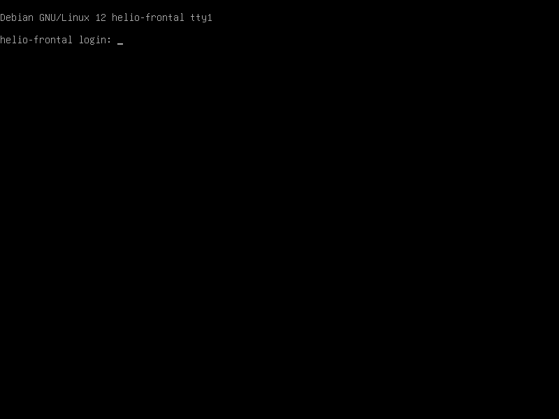
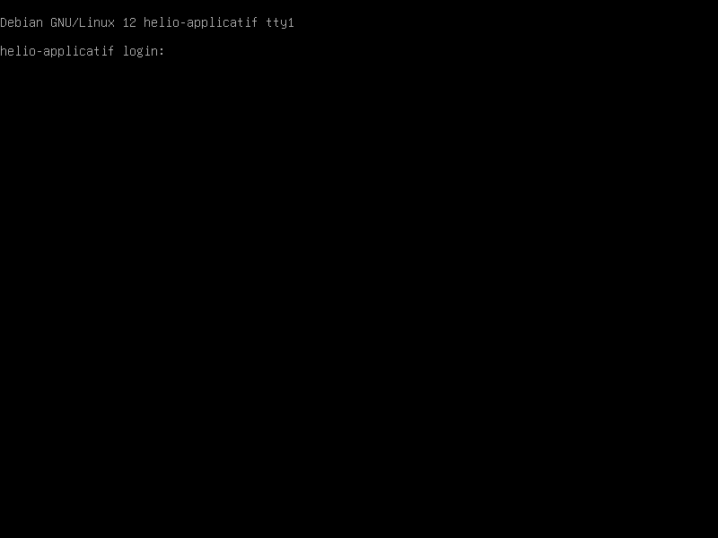

HelioMed, PME éditant une plateforme de prise de RDV médicaux (Flask/Nginx/PostgreSQL, 2 serveurs Linux,
données de santé RGPD). Le labo reproduit cette architecture avec OWASP Juice Shop (interface patient) et
DVWA (composant applicatif de test) comme cibles d'entraînement, sur un réseau interne isolé.
TP Cybersécurité & protection des donnéesHelioMed — Exercice 1
3.Cartographie du labo — Étape 1.1
Déploiement des 2 VM, découverte réseau, scan web passif et scan d'image — dans cet ordre.

Console helio-frontal — VM démarrée.Console helio-applicatif — VM démarrée.
Découverte réseau — nmap -sV -sC 10.10.10.0/24
10.10.10.10 — 22/tcp ssh OpenSSH 9.2p1 · 80/tcp http nginx 1.22.1 (|_http-title: OWASP Juice Shop)
139/445 netbios-ssn Samba smbd 4.6.2 ← exposé inutilement (hérité du clonage)10.10.10.20 — 22/tcp ssh OpenSSH 9.2p1 · 139/445 Samba smbd 4.6.2
3000,8080 filtered (scan sur soi-même via Docker — confirmé "open" depuis helio-frontal)Post-scan: ssh-hostkey Possible duplicate hosts
Key 256 ED25519 / ECDSA identiques utilisées par 10.10.10.10 ET 10.10.10.20 ← découverte majeure, voir §4
Découverte inattendue la plus significative
Les deux VM, clonées depuis une même image sans régénération, partagent des clés hôte SSH identiques.
Un poste sur le réseau interne pourrait usurper l'un des deux serveurs sans alerte « clé inconnue » côté client SSH.
Scan passif OWASP ZAP
Spider (crawl) puis observation passive uniquement — aucune requête d'attaque envoyée, cible atteinte
via redirection NAT (host:8888 → helio-frontal:80).
0
High
116
Medium
160
Low
43
Info
Rapport complet : outputs/exercice1/zap_report.html · JSON : zap_alerts.json.
Scan Trivy — images applicatives (aperçu, détail en page 5)
Juice Shop : 50 CVE · DVWA : 805 CVE · MySQL 5.7 : ~102 CVE — voir outputs/exercice1/trivy_*.txt.
HelioMed — TP CybersécuritéPage 2 / 6
TP Cybersécurité & protection des donnéesHelioMed — Exercice 1
4.Registre des actifs et vulnérabilités — Étape 1.2
Construit à partir des découvertes réelles ci-dessus. Sensibilité RGPD : données de santé classées critiques par défaut.
Actif
Type
Sensib.
Vulnérabilité constatée
Source
Reverse proxy Nginx
Infra
Moyenne
Port 80 non chiffré ; bannière serveur visible
nmap/ZAP
Application patient (Juice Shop)
Appli
Élevée
CSP absent, CORS permissif (*), en-têtes manquants
ZAP
Composant test (DVWA)
Appli
Critique
Appli volontairement vulnérable exposée en interne (Apache 2.4.25)
nmap
BDD MySQL (santé sim.)
Donnée
Critique (santé)
Mot de passe root en clair dans docker-compose.yml
Trivy/revue
VM helio-frontal
Infra
Moyenne
Samba exposé inutilement ; clé SSH dupliquée
nmap
VM helio-applicatif/BDD
Infra
Critique
Idem ; clé SSH dupliquée (MITM/spoofing indétectable)
nmap
Image Juice Shop
Appli
Élevée
50 CVE (8 CRIT, 42 HIGH) dont crypto-js CVE-2023-46233
4. Usurpation via clé SSH clonéeconstaté, pas théorique — interne/ciblé → poste d'admin du prestataire (origine du clonage VM) → nmap révèle la clé hôte SSH partagée entre les 2 serveurs → usurpation sans alerte client → MITM / redirection trafic admin.
7.Objectifs de sécurité et choix des outils — Étape 1.4
#
Objectif mesurable
DICP
1
Aucun service exposé sans authentification (0 endpoint non protégé — ZAP)
Confid.
2
100% des données de santé chiffrées au repos (BDD + sauvegardes)
Confid.
3
0 CVE critique/haute non corrigée > 30 j sur les images en prod (Trivy)
Intégrité
4
Disponibilité API ≥ 99%/mois (protection anti-DoS sur le frontal)
Disponib.
5
100% des accès admin tracés et attribuables, pas de compte partagé
Preuve
Nmap a révélé un risque d'infra (clés SSH dupliquées, Samba superflu) invisible aux scanners applicatifs.
ZAP (passif) est adapté à l'interface patient sans risquer de perturber un service de santé (116 alertes Medium exploitables).
Trivy couvre la chaîne d'approvisionnement logicielle, angle mort des deux autres outils.
Non retenus : Nikto (redondant avec ZAP), Burp Suite (usage manuel, moins reproductible).
HelioMed — TP CybersécuritéPage 4 / 6
TP Cybersécurité & protection des donnéesHelioMed — Exercice 1
TP Cybersécurité & protection des donnéesHelioMed — Exercice 1
10.Incident rencontré et résolution

Kernel panic réel, console helio-applicatif, pendant l'install Docker.
SymptômePendant apt-get install docker.io, le noyau a paniqué
(« Fatal exception in interrupt »). Après reboot, pauses répétées.
Fausse pisteRAM/CPU insuffisants supposés — l'augmentation (1→2 vCPU, 1,5→2 Go)
n'a fait que déplacer le symptôme (pause au lieu de panic).
Cause racine réelleDisque C: hôte à 0 octet libre (475 Go utilisés) → écritures
.vdi en échec. Correction : suppression de 3 VM orphelines non enregistrées (25,75 Go libérés) → succès immédiat.
Second incident du même type (Trivy)
Scan Juice Shop en timeout après 10/20/40 min depuis l'hôte alors que réseau et disque étaient sains — cause probable :
interception antivirus (Windows Defender) sur des milliers de fichiers node_modules, paramètre système
hors de ma permission de modification. Contournement : Trivy installé et exécuté danshelio-applicatif
sur les images déjà locales — résultat en moins de 3 minutes.
11.Journal de bord et part IA
Journal complet : docs/logbook.md.
Étape
Résultat
Installation VirtualBox, Nmap, Trivy, ZAP
✅ OK
Création VM (ISO Debian netinst)
❌ Saturation mémoire hôte → abandonné
Clonage VM socle (UBU-BASE) + réseau interne
✅ OK, ping 0% perte
Déploiement Docker + Juice Shop/DVWA/MySQL
❌ Kernel panic → ✅ corrigé (disque hôte)
Reverse proxy Nginx
✅ HTTP 200/302 via proxy
nmap -sV -sC + scan ZAP + scan Trivy
✅ (Trivy : ❌ timeout hôte → ✅ scan local VM)
Part IALa quasi-totalité de la mise en œuvre technique (VM, réseau, déploiement, scans,
diagnostic des 2 incidents) a été réalisée avec Claude Code en pilotage direct (VBoxManage, guestcontrol,
docker-compose), sous supervision et validation du binôme à chaque étape sensible. L'analyse (STRIDE, EBIOS,
registre, objectifs) est construite à partir des résultats réels des scans, pas de contenu générique.
12.Conclusion
L'analyse révèle un profil de risque cohérent avec une plateforme jeune et rapidement
déployée : la surface applicative (DVWA, 805 CVE) et les défauts d'infrastructure (clés SSH dupliquées, Samba
superflu) sont prioritaires, avant même les vulnérabilités applicatives classiques détectées par ZAP. Les 5
objectifs de sécurité (§7) adressent directement ces constats et guideront les exercices suivants du TP.